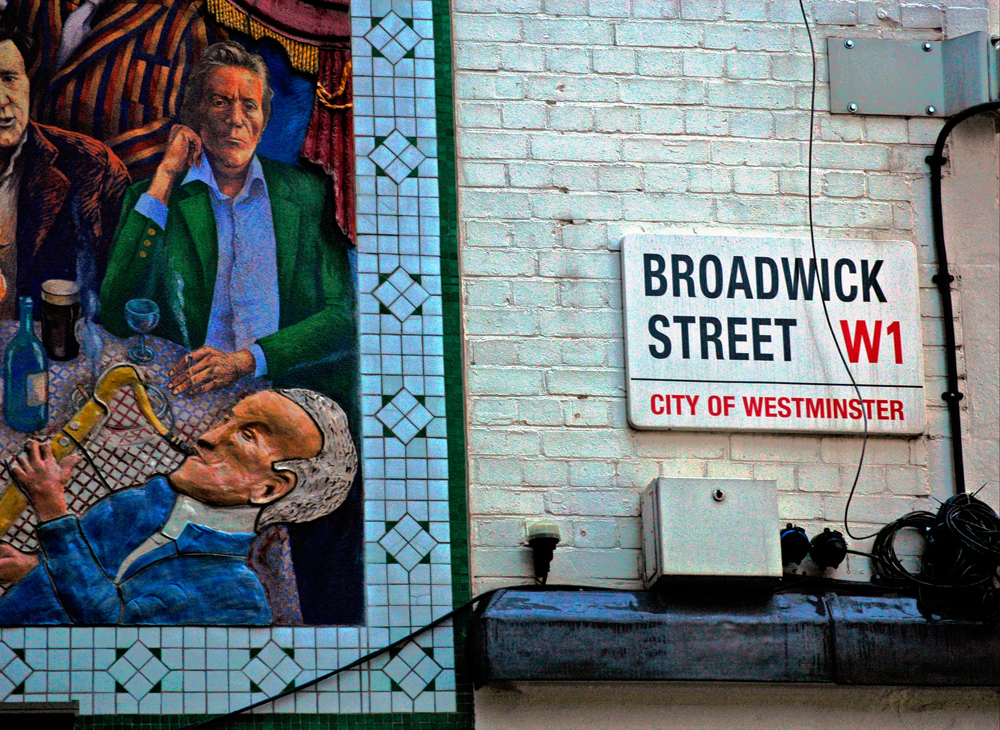

Using open data and volunteered geographic information for smart cities
Smart cities are positioned as a solution for addressing many of our 21st-century challenges. Smart cities can be supported by harnessing location-based data, coupled with the appropriate and sustainable use of technology. Essentially, being ‘smart’ equates to a paradigm shift of embracing an open culture while exploring greater use of open data and peer-to-peer, volunteered geographic information (VGI)
It is not about the technology, but the infinite flow of data that matters CC BY 2.0, uploaded by włodie.
21st century urban challenges
More than half of the world’s population currently resides in cities, with one in eight living in one of the 28 megacities with more than 10 million residents. The existing urban population is further inflated by an estimated annual increase of 65 million people, with the bulk of this increase in Asia and Africa. Urbanisation is not detrimental per se, however, rapid and unintended urbanisation can be. Meeting the challenges arising from balancing competing needs of the people, such as in transportation and housing are imperative to the management of cities. For instance, urban pressures can often result in disadvantaged communities residing in areas susceptible to natural disasters such as floods and earthquakes.
Increased environmental vulnerability for marginalised communities is also evident for countries where people predominantly reside in urban areas yet experience a comparatively low urbanisation growth rate such as the UK. 82% of the UK’s population currently reside in urban areas and this is projected to reach 70 million by 2027 but the annual growth rate is at 0.3%.
Location-based data – the quintessential infrastructure for smart cities
Data as the building block of our 21st century cities. CC BY-NC-ND 2.0, uploaded by Kris Krüg.
‘Smart cities’ is a buzzword that is often touted as a solution to many of the challenges faced by society in the 21st century. However, being a ‘smart city’ is never the end goal, but reflects the continual progress by which cities become more liveable and resilient to challenges. Central to this process is the rallying call to foster a bottom-up culture where people participate and share knowledge.
As the position paper from Eurocities aptly argues, “there are no one-size-fits-all solutions: becoming smarter will mean different things to different cities”. Thus, being ‘smart’ is also about a lot more than driverless cars or delivery drones!
So what are the key ingredients for a smart city? In my view, harnessing location-based data, coupled with appropriate, sustainable use of technology are mission-critical. We need to recognise that data is infrastructure and that open data can be used to resolve our 21st century challenges. Minister of State Matthew Hancock, who is responsible for championing the UK’s digital policy has said: “Addresses are a fundamental part of all our lives and the bedrock of our nation’s data infrastructure”.
Data coupled with locational attributes (such as postal addresses or location tags) can be visualised and analysed to discover otherwise undetectable spatial patterns. In fact, the concept of analysing location-based data is not new! In 1854, John Snow, the English physician and pioneer of medical hygiene, mapped cases of cholera outbreaks and suggested that it was a waterborne disease. He then, through further analysis, identified a particular pump in Broad Street (now Broadwick Street) as a potential source of contamination. Comparing then and now? The medium for propagating data has changed but the focus on people has not.

London’s Broadwick Street. CC BY 2.0, uploaded by Dun.can.
Volunteered geographic information (VGI) as crowdsourced location-based data
In the present day, location-based data is not just generated and maintained by governments or businesses, but rather, contributed extensively by the public as volunteered geographic information (VGI). There are many ways in which people contribute meaningful VGI. Examples include citizen as sensors for detecting air quality and earthquake monitoring, citizen feedback reporting, community mapping via Openstreetmap and peer-to-peer sharing using location-enabled social media platforms such as Twitter and Facebook. Many examples of VGI today are publicly-accessible but can be made open in order to unlock greater value from its use. A good example is the use of data to support ‘smarter’ flood management.
Juxtaposing open data from sensors and bottom-up VGI for ‘smarter’ flood management
A perennial issue plaguing cities is the socio-economic impact of floods. Floods (and the accompanying storms) account for 71% of all natural disasters in the last 10 years. For the dreadful winter floods in the UK, Environment Agency’s open data of river sensor information was used in Shoothill’s Gaugemap to disseminate information on potential flooding to the public.
However, open data needs friends. Within the spectrum of data, publicly-accessible data (shared but not technically open by nature of licensing and/or other use restrictions) can be used in conjunction with open data to derive new possibilities for use. This is exemplified through Peta Jakarta, which is a platform that integrates tweets with open data from river sensors. In doing so, the platform is able to provide both early warning to people living in potentially-flooded areas and to facilitate disaster response by tapping on shared on-ground information.
Our 21st century challenges are here to stay. While smart cities are positioned as a solution to these challenges, this cannot be done without efforts towards the collection, visualisation, use and dissemination of location-based data. Therefore, cities must invest in creating a robust data infrastructure through involving citizens in contributing data as much as it does governments and businesses. We must also encourage conversations and gather people to share knowledge in building solutions to flooding. By focusing on data as infrastructure, we can help obtain more value from our physical infrastructure and in doing so, our cities can potentially be smarter.
Eric Koh is a Research Fellow at the ODI.
If you have ideas or experience in open data that you'd like to share, pitch us a blog or tweet us at [@ODIHQ](https://twitter.com/odihq “@ODIHQ”).